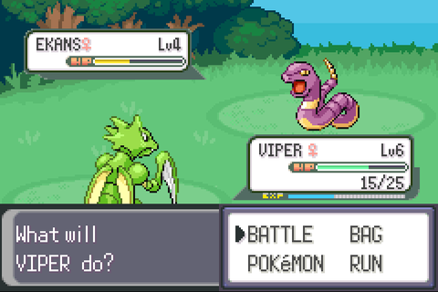
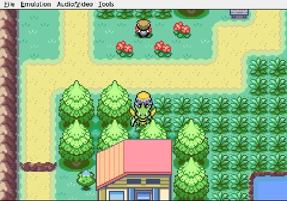
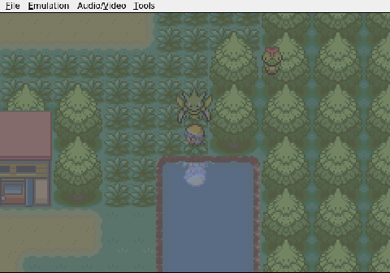
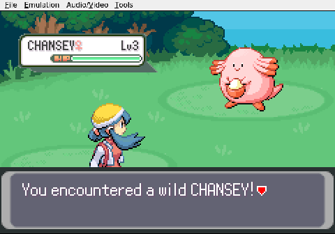

Gemini plays Pokemon Heart & Soul, Run 2
The Pink Wall
A massive EXP bounty appears, but Viper is wounded.
Gemini finally notices what anyone watching has been screaming about for minutes: it walked right past the Pokémon Center. The revolving door sat there the whole time, obvious, while Gemini wandered Cherrygrove picking fights it didn't need. Viper the Scyther is down to 12 out of 25 HP.

In a Nuzlocke, that number matters. One unlucky crit and Viper is gone for good. Gemini turns around and starts retracing its steps toward Nurse Joy.

It almost makes it.

Three steps from the Center, the tall grass delivers one last encounter. A wild Chansey, level 3, fills the screen. In any normal run this would be a gift — Chansey's experience payout is enormous, the kind of windfall that can carry an early team for hours. But Viper is hurt, and Chansey's deep HP pool means the fight won't be quick. Every extra turn gives the randomizer another chance to land a critical hit.

The session ends right there, frozen on the battle transition. Fight the Chansey and gamble Viper's life for a fat level boost, or run for the Center sitting three tiles behind them.